Switching On:
1. Turn on the numbered switches: stage controller (1), microscope power supply (2), optionally, the signal distribution box (3), microscope stand (4), epifluorescence lamp (5), PC (6). Do not turn on the epifluorescence lamp if you intend to use only transmitted light imaging. If you intend to use the heated enclosure, switch on the heating unit and temperature module.
2. Log in as User and start ZEN Blue software.
3. When starting ZEN Blue, select ZEN Pro. You will be prompted to start microscope stage calibration. Attention: before starting the stage calibration make sure the stage is empty and lowered down to avoid the risk of a mechanical collision.
| Notes on the epifluorescence lamp: |
|
Switching Off:
1. Make sure you have saved your data and turn off ZEN software.
2. Move the stage to the Load position (by pressing the lower button next to the focusing knob or by pressing the button at the touchscreen panel) and remove your sample.

3. If you have used an immersion objective, wipe it clean. Use the lens cleaning tissue. For cleaning oil immersion, moisten the tissue at the solvent dispenser. Always wipe the objective only once, in one direction. If this is not sufficient, repeat with a new piece of tissue. Never reuse the tissue.


4. Shut down the computer.
5. Turn off the epifuorescence lamp (5), microscope power supply (2) and stage controller (1) and, if you have used it, the signal distribution box (3).
6. Make sure all openings of the heated enclosure are closed and the dust cover is in place.
7. Make sure you leave the microscope room clean. Spray with 70% ethanol and wipe any surfaces that could have been in contact with biological material. Do not leave any samples or any other belongings behind.
Transmitted light imaging:
A simple transmitted light imaging experiment can be set up in the Locate tab. In general, the Locate tab allows you to set any simple imaging experiment; however, for more complex automated acquisition modes such as multi-channel or multi-position imaging, we need to go to the Acqusition tab as we will discuss later.
There are two panels in the Locate tab: Light Path and Camera. Let us look at the Light Path first. The panel displays a diagram of microscope parts in a topology corresponding to their physical locations (what is on top in the diagram is on top in reality).
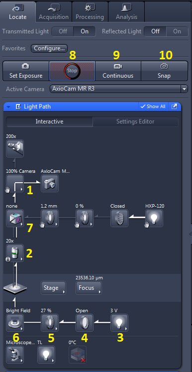
Some of the boxes in the diagram have small symbols in their lower left-hand side corners. A hand symbol indicates a manually controlled component - it has to be adjusted manually and the software has no feedback about its state. Pop-up windows may appear to warn you to check the manual components before you start image acquisition. An example is the mirror which directs the image either to the eyepiece or to the camera (1) and is controlled by a manual lever:
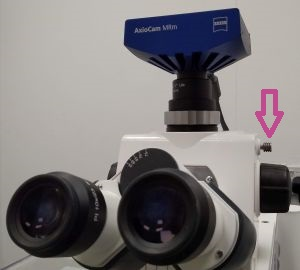
The symbol ⓘ in the objective box (2) indicates a manual but registered component - you need to turn the objective revolver manually but the software receives feedback on its current position. Boxes with no symbols in the corner correspond to motorised components that can be controlled from the software interface.
The transmitted light arm is fully controlled by the software and consists of a halogen lamp (3), shutter (4), field-stop (5) and condenser (6). Clicking at the arrow in the lower right-hand side corner of the respective box opens a dialogue with settings. The shutter (4) is an exception as it is only toggled between two states (open/closed) by clicking the box.
The voltage of the lamp (3) can be set - it changes the intensity of the light as well as its hue (lower voltage gives "warmer" hue, with higher representation of the red side of the spectrum).
The field stop (5) defines the illuminated area, this is used when setting Koehler illumination.
The condenser (6) settings dialogue contains selection of the mode of contrast (brightfield, phase contrast, DIC or darkfield); however, since no DIC prisms are present in the setup, DIC is not applicable. Phase contrast requires specialised objectives, check the system overview to find which objectives support phase contrast. Alternatively this information can be found from objective details displayed at the touchscreen panel. For phase contrast, the objective needs to be matched with the correct phase ring (Ph1, Ph2 or Ph3).
The numerical aperture of the condenser can be also set here. This influences the intensity of the light at sample as well as the contrast and resolution of the images. For brightfield the rule of thumb is: Condenser NA = 1/2 Objective NA. For phase contrast and darkfield, the highest available condenser NA is usually selected. Note that darkfield requires: Condenser NA > Objective NA.
The current condenser contrast mode/NA is also displayed at the touchscreen panel (status bar at the bottom, brightfield (BF)/NA = 0.9 in the example).
| Notes on the condenser: |
|
The last component involved in the setting is the motorised filter cube turret (7). For transmitted light we don't need a filter cube, so we select the empty position.
Next we'll have a look at the Camera panel. The only parameter here to set is the exposure time. For brightfiled it can be usually quite short (order of ms usually); for phase contrast and darkfield, longer exposure and/or higher lamp voltage are typically needed. The exposure time can be optimised automatically by pressing Set Exposure. See notes on optimising image intensity.
Note: If Auto Exposure option is checked, the exposure time will be automatically optimised for each image frame captured which may result in varying exposure times within a series of images.
Note: that the camera is grey scale only. If you need to take transmitted light images in colour, you can use the following trick using multi-channel acquisition.
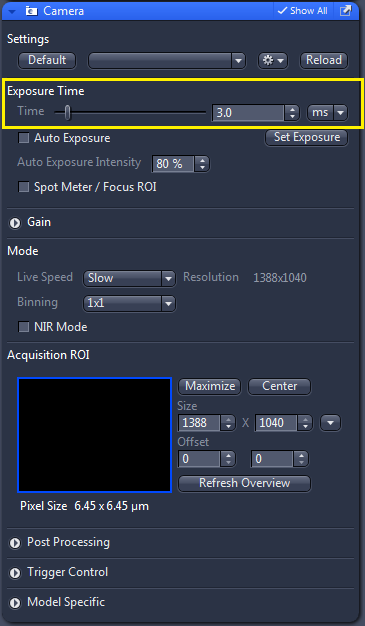
This is all for the settings. If we have loaded a sample, we can view it in the eyepieces or on the screen using live camera image - Live (8) or Continuous (9), and focus the sample by turning the focusing knob (located on the sides of the microscope body as well as on the side of the touchscreen panel). Once the sample is in focus, we can take static images by pressing Snap (10). See notes on adjusting the display of images in ZEN. We can toggle the objective position between the Load position and the last Working position (position at which images were taken) by pressing the lower and upper button next to the focusing knob, respectively.
| Koehler illumination: |
|
Fluorescence imaging:
Locate tab can be used for simple fluorescence imaging; however, for more complex automated acquisition modes such as multi-channel or multi-position imaging, we need to go to the Acquirsition tab as we will discuss later.
Let's start again with the Light Path panel. The fluorescence illumination arm contains mostly manually controlled components. The only motorised component is the shutter (1). The field stop (2) and the attenuator wheel (3) are manual. Another motorised component involved is the filter cube (4). This time we need to select a cube to match the fluorophore of interest.
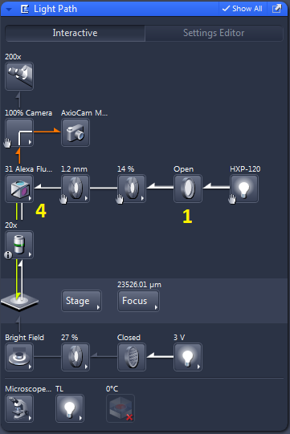
The attenuator wheel (3) reduces the excitation intensity reaching the sample - the higher the number set (1 - 6) the lower the intensity (for the actual intensities refer to the table).
The field stop (2) determines the field of view analogously to the field stop in transmitted light imaging.
Next we'll need to set the camera exposure time in the Camera panel. For fluorescence it is usually on the order of 100 ms. This is all for the settings and we can view the live image by pressing Live or Continuous or take static images by pressing Snap. The exposure time can be optimised automatically by pressing Set Exposure. See notes on adjusting the display of images in ZEN.
Note: Never check Auto Exposure if you want to compare fluorescence intensity between images. For comparing intensities it is critical to acquire the images with identical settings, including identical exposure times. Auto Exposure can also result in impractically long exposure times when the imaged part of the sample exhibits no or extremely low fluorescence (e.g. when acquiring a Tile-scan including regions lacking fluorescent structures).
Note: If you've set a long exposure time, it will not be reflected in Live mode since it's intended for purposes such as focusing or stage movement where a fast refresh rate of the live image is desirable.
Multi-channel imaging:
For more complex imaging scenarios, we need to move to the Acquisition tab, where we can set up acquisition of multi-channel images, Z-stacks, multi-position images, or time-lapse acquisition (and, of course, arbitrary combinations of those).
Note: the lastly used multi-channel setting may be loaded automatically. To setup your own setting from the beginning, create a new setting in Experiment Manager.
To set up a multi-channel acquisition, press the button in the Channels panel. A window with a selection of fluorescent dyes will pop up, where you can select and add dyes identical or close to those in your sample. Different transmitted light contrast modes can be added as well.
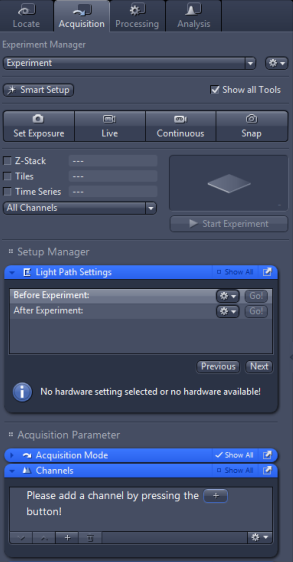 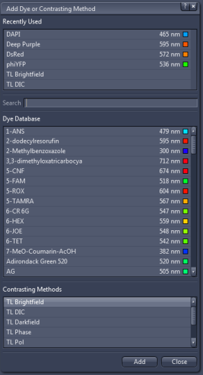
Note that the selection is vastly redundant, since the number of actual settings for fluorescence is limited by the number of filter cubes. The program thus matches each fluorophore with the best match from the available cubes.
Let us for example select a blue fluorophore such as DAPI, a red fluorophore such as DsRed and Brightfield. The Channels panel can than look something like this:
By a right click on the name of the fluorophore, we can rename the channel (e.g. if our exact fuorophore is not in the list and we've selected a spectrally similar one instead). In this example I've renamed DAPI to BlueDye and DsRed to RedDye. You can also change the colour in which the images for individual channel will be displayed (small square to the right of the channel name).
Left click on a channel selects the channel. In the example shown, RedDye is selected. The selected channel will be displayed in live mode by pressing Live. I can also set the exposure time for the selected channel (each channel can have different exposure, see notes on setting the exposure) and modify the Light Path. However, since the only motorised component in the fluorescence light path is the filter cube, which is defined by the choice of the fluorophore, there's not really anything left to set.
More settings can be adjusted for transmitted light channels. The only difference from setting the Light Path in Locate tab is the presence of check boxes at each component. Those indicate whether the settings for the given component will be a part of the channel settings. In the example shown, the field stop is unchecked. That means that the current opening of the field stop will be used for the acquisition of the channel. E.g. if I have two different transmitted light channels in my multi-channel acquisition (e.g. brightfield and darkfield) they will both have the same field stop opening. On the other hand, if I check the box, I can set a different value for each channel.
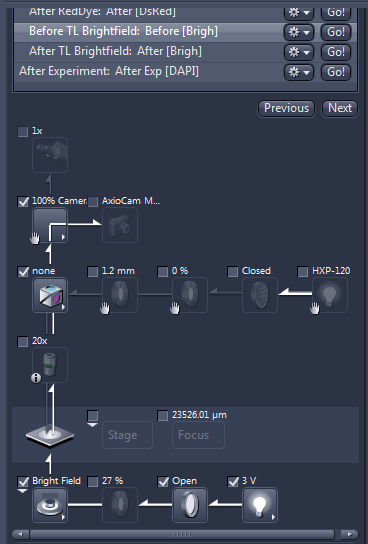You may have also noticed "Ref." in the BlueDye channel line, it stands for Focus Reference and is related to an option to correct for objective chromatic aberration (unlocked by selecting for Channels panel) as explained in the following box:
| Chromatic aberration compensation: |
|
By pressing Snap, we take an image with all selected channels (those that are checked in the Channels panel - checkbox is to the left of the channel name). The image can be displayed as an overlay of all channels (2D) or as a split view.
There are two panels below the image display. Let's look at the left-hand side one:
The control in the panel allow us to zoom in and out and select which channels are displayed (only the two fluorescence channels are displayed in the example, brightfield display is switched off). The Graphics tab (currently hidden) allows to add objects such as a scale bar to the image.
The right-hand side panel shows the image histogram discussed in the following box:
| Image histogram: |
|
Z-stack acquisition:
To acquire a stack of images at different Z-planes check Z-stack option:
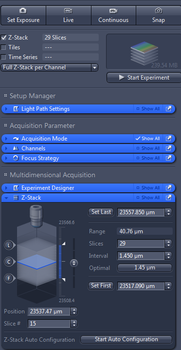
Z-stack panel will be added to the settings panels in the left-hand side container. To define a stack, focus to the lowest plane you want to acquire and press: Set First. Then focus to the uppermost plane and press Set Last. The number of slices in the stack is determined by the range and the interval between slices. Interval that satisfies Nyquist sampling for the axial resolution of the selected objective is suggested as Optimal (1.45 μm in the example shown).
Once the stack is set, start the acquisition by pressing Start Experiment. The stack will be recorded for all channels checked in the Channels panel.
Z-stack can be then viewed by individual planes, as orthogonal sections or as 3D rendering (see the tabs to the left of the displayed image).
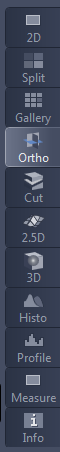
Alternatively, Z-stack can be set up by selecting the central plane and the range (centre +/- half of the range). This option is unlocked by selecting for Z-stack panel. Focus to the central plane, confirm it as the centre of the stack by pressing Center and define the range and interval between slices.
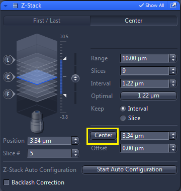Multi-position imaging:
The motorised stage can be used to set a few types of multi-position imaging experiments:
- Tiles scan - acquire an image larger than the field of view of the camera by stitching together multiple images acquired at neighbouring positions.
- Positions - remembers a list of selected stage positions, which can be then imaged repeatedly. This makes sense mainly in combination with time-lapse imaging, when it allows to monitor in time multiple locations within the sample.
- Sample-carrier-specific position grids - for standard sample carriers such as a 96-well plates allows setting up easily acquisition at a regular positions grid (e.g. each well of the plate).
Check the Tiles option and a Tiles panel will be added:
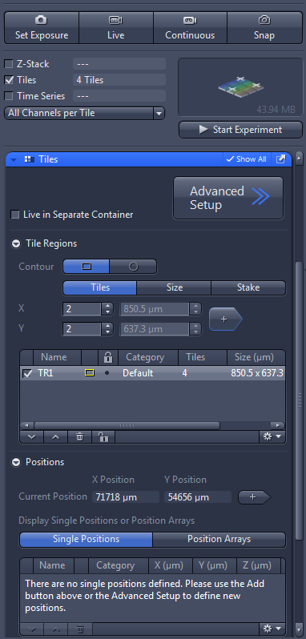The upper part of the panel allows defining the Tile scan - in the example shown the scan will cover a field of 2x2 fields of view, by pressing the button it is added to the list of Tile scan regions (multiple regions can be defined and then all of them imaged).
If you are imaging a single large object (e.g. a tissue section) and want to make sure that you capture the whole object, select Stake option. You will then move the stage to several positions at the boundaries of the object and store those positions (called Markers in this context). The program will then set the tiles regions in such a way that it contains all the stored positions.
Important: Because of the orientation at which the camera is mounted, you will need to rotate the camera image by 180 deg. This can be set in the Acquisition Mode panel:
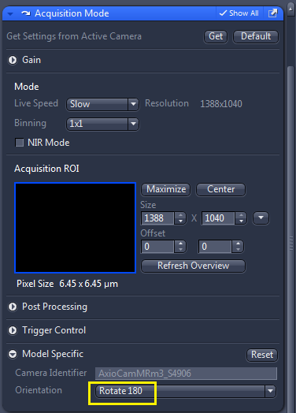Acquisition at a set of discreet positions can be set in the lower part of the Tiles panel. Move the stage to the desired position and press . The position will be stored in the list of positions. Repeat this step for all other positions to populate a list of arbitrary positions. Another option is to select a Sample carrier from the list (e.g. 96-well plate). Then press Calibrate... and you will be prompted to move the stage to selected reference wells. Based on those reference positions, the program will calculate the grid of positions of all wells in the plate allowing setting up an automated acquisition in all (or selected) wells of the plate.
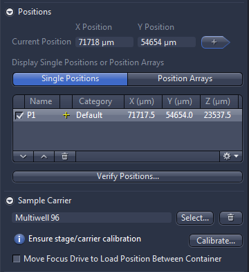Time-lapse imaging:
Setting up a time-lapse acquisition is very straightforward. Check the Time series option and a Time Series panel will be added. You can set the number of time points to be acquired (100 in the example) and the interval between them (5 min. in the example). If you want to acquire images with the maximum temporal resolution possible, set the interval to zero and check the option "Use Camera Streaming if Possible". Start acquisition for all selected channels by pressing Start Experiment.
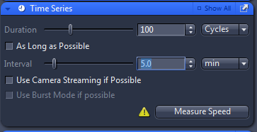
Saving images:
Acquired images are listed in the image explorer panel at the right-hand side of ZEN window. For each image the name, size, thumbnail and icons indicating image type are shown. In this example we see a multi-channel image (C), a multi-channel Z-stack and a multi-channel Tile-scan. Image (selected by double-clicking on it) can be saved by clicking the floppy-disk button (highlighted for the benefit of younger users not familiar with the early history of data storage).
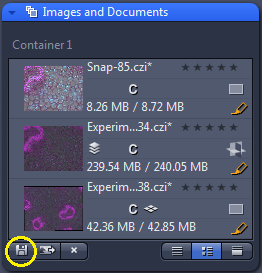This is not very convenient for saving large numbers of images. If you want to acquire many images, it is useful to set up Autosave option in a dedicated panel in the settings area on the left-hand side.
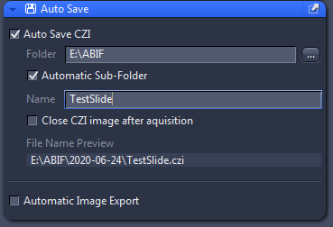Select a folder for your images at one of the data drives (D: to G:). ZEN will automatically create a subfolder there named according to the current date. Set a base name for your images - all images will then have the name with a number differentiating individual images.
Note: The images you see open in ZEN (in the image explorer panel) are not the ones that is saved to disk by autosave. Any changes to the images after acquisition (e.g. adding scale bars) do not modify the autosaved images and the modified images need to be saved separately.
Note: Autosave applies only to images acquired under the Acquisition tab. Images Acquired in the Locate tab by pressing Snap, are not saved automatically.
When closing ZEN, a window will appear with the list of modified files asking whether they should be saved. Do not be disturbed if all images appear there as unsaved when you are using autosave - that does not mean that the autosave is not working (see the note above). Besides images, the list also contains all Experiment Manager files that have been opened during the session. You can uncheck all and not save any changes if you have saved all your images (e.g. by Autosave). Note that saving any images in this way saves them to a default image location rather than letting you choose the destination.
Saving imaging settings:
Acquisition settings can be saved for future use in Experiment Manager (select Save As and give the settings a name by which you can later recognise the file; ideally include your name to make it clear whose settings those are). In the example settings file called Experiment is open; other settings files can be chosen from a drop-down list.
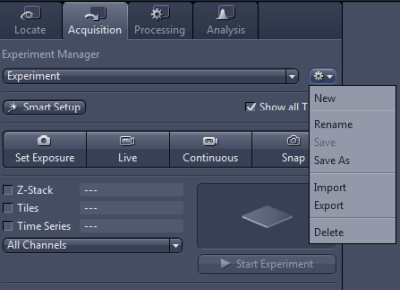The settings are also stored in the image metadata and settings used to acquire an image can be recalled by the Reuse button when the image is open.
Note: neither experiment manager nor the image metadata collect information about manually controlled components. Make sure you note those down to be able to reproduce your experiments.
| Transmitted light in colour: |
|